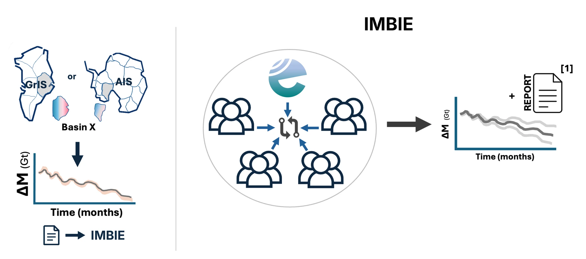
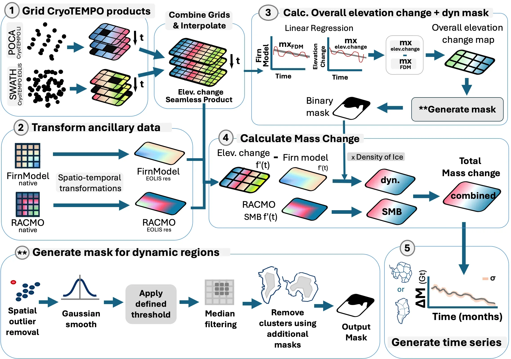
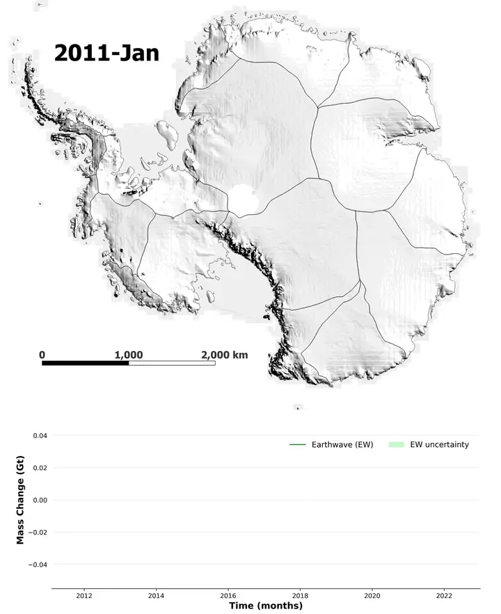

Earthwave
Overview
The brief: build a production pipeline that turns Earthwave's combined and interpolated CryoTEMPO EOLIS swath and CryoTEMPO Land Ice (POCA) altimetry into monthly surface elevation change and mass change for 2010–2024, aggregated to ice sheet drainage basins, so that Earthwave could contribute its own dataset to the next IMBIE assessment.
IMBIE, the Ice Sheet Mass Balance Inter-comparison Exercise, combines mass balance estimates from multiple agencies and research groups into a single consensus record of ice sheet change. To be included, every contribution has to meet IMBIE's data submission standards for format, units, metadata and uncertainties. Meeting those standards was a core requirement of the project.

[1] Otosaka et al. (2023), Mass balance of the Greenland and Antarctic ice sheets from 1992 to 2020, Earth System Science Data.
Deliverables
- An end-to-end pipeline from gridded altimetry to basin-scale elevation and mass change time series, with uncertainties.
- Outputs formatted to the IMBIE submission standard: correct column order, units, fixed metadata fields and data-coverage flags.
- Processing that scaled to the whole ice sheet, running on Earthwave's cloud infrastructure.
- Tested, reviewed code merged into the company repository (74 commits over the placement).
- A conference poster presenting the work at SpaceComm, Glasgow, 2024.
Data coverage
Data
- CryoTEMPO EOLIS (CryoSat-2 swath) and CryoTEMPO Land Ice (CryoSat-2 POCA) elevations, combined and interpolated into a seamless monthly product.
- RACMO regional climate model surface mass balance, regridded from 25 km to the 2 km EOLIS grid.
- Firn densification model, used to correct elevation change for firn compaction.
- IMBIE drainage basins for aggregation. Published estimates (previous IMBIE, Shepherd et al. 2019, Rignot et al. 2019) were used for validation.
Methods

The pipeline runs in five stages:
- Ingest and grid: load the combined EOLIS and POCA elevation-change product on a 2 km monthly grid.
- Align ancillary data: reproject and resample RACMO and the firn model onto the same grid (bilinear from 25 km, then nearest neighbour), so every input lines up pixel for pixel.
- Elevation change: fit per-pixel linear trends and remove the firn model's signal, leaving the elevation change caused by ice dynamics.
- Mass change: generate a mask of dynamically thinning regions, using outlier removal, Gaussian smoothing, median filtering, thresholding and cluster removal by altimeter mode zone. Inside the mask, elevation change × area × ice density gives dynamic mass change. Outside it, mass change is taken from RACMO surface mass balance. The two are combined into total mass change.
- Basin time series and submission: aggregate monthly mass change and uncertainty by drainage basin and ice sheet, then pass the results through an automated formatting step that writes them in IMBIE's exact submission format. This step enforces the expected column order, units and data types, adds the required metadata labels (contributor, ice sheet, basin type, method and data coverage), and checks every file against the specification before export, so each submission is consistent and ready to submit with no manual editing.
Engineering at ice sheet scale
Working alongside Earthwave's software engineers, I learned best practices for working with the company's Google Cloud-hosted data: accessing and processing ice sheet-wide datasets efficiently in the cloud rather than on a single machine. My code had to be written within the framework and standards of the organisation's existing codebase, so it could be maintained by the team and extended to Greenland after I left.
This was where I learned industry software practice. Every change went through linting, code review by the engineers, and automated CI/CD checks before it was merged. Having experienced developers review my code taught me more about writing clean, maintainable code than any course had, and it has changed how I write code in my own projects since.
Results

Note: these are preliminary outputs produced during my placement, not official Earthwave or IMBIE results. For the finalised product, see Earthwave's published mass change data.
What I learned
- Delivering to an external standard. Building to IMBIE's specification meant the format, units and uncertainties were as much part of the deliverable as the science.
- Industry engineering practice. Linting, code review and CI/CD, learned by working within a professional team's codebase and standards, and now part of how I write all my code.
- Geospatial data engineering at Earth scale. Working with billions of altimetry points changed how I think about data: I moved from managing data region by region to managing it at planetary scale. That meant exposure to the methods and systems behind cloud-hosted geospatial data, including spatial indexing and Discrete Global Grid Systems (DGGS), which divide the whole Earth into a consistent hierarchy of cells so that data can be stored, queried and combined efficiently anywhere on the globe.
- Validation as a gate. Checking outputs against IMBIE and published records before treating them as finished.
- Communicating the work. Presenting the pipeline and its results to an industry and research audience at SpaceComm Glasgow 2024.
Handover items at the end of the placement were to integrate the surface mass balance and firn model uncertainties, refine the dynamic mask for smaller thinning outlet glaciers.